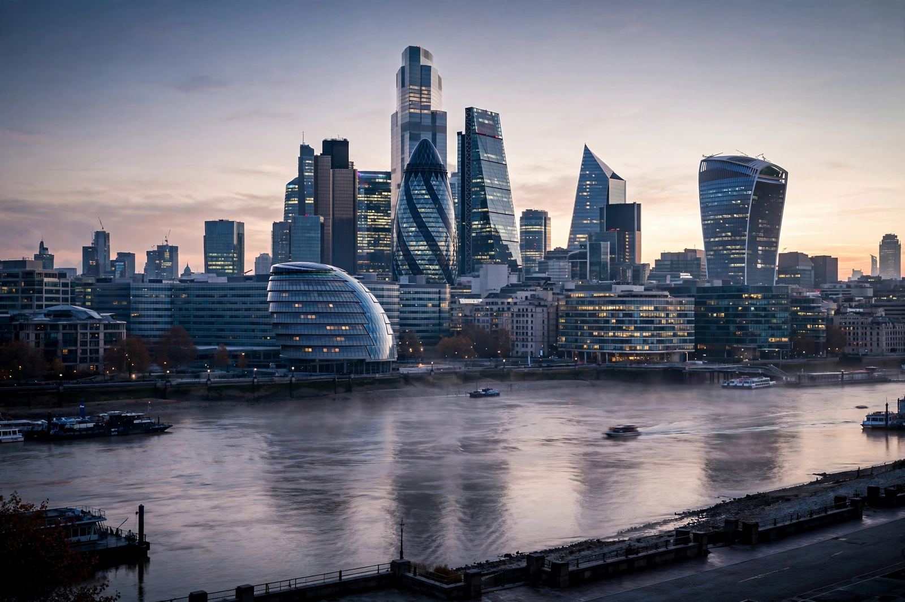

Markets
FTSE 100 edges higher as energy shares offset retail weakness
London's blue-chip index closed modestly up, helped by oil majors, while retailers slipped on cautious trading updates.

London's blue-chip index closed modestly up, helped by oil majors, while retailers slipped on cautious trading updates.
Results from major lenders on both sides of the Atlantic pointed to solid fee income cushioning softer loan demand.
Retailers are shrinking store footprints and leaning on click-and-collect as shopping habits continue to shift.
Investors are scrutinising order books across the semiconductor supply chain for signs the data-centre boom is cooling — or not.
Pound steady ahead of inflation data
House price growth slows for third month
Airline profits squeezed by fuel and staffing costs
Start-up funding shows early signs of recovery